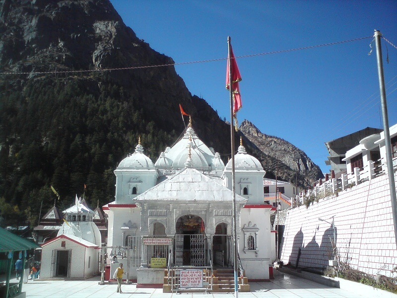
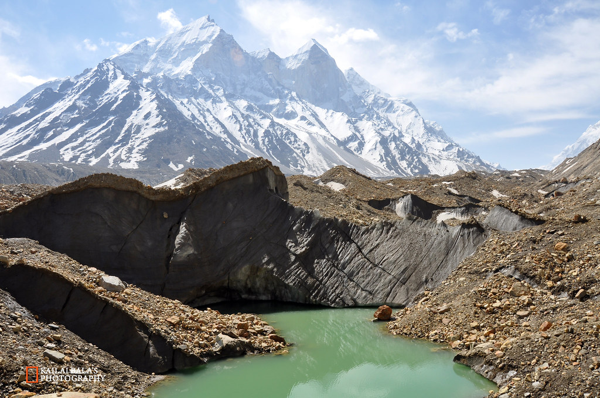
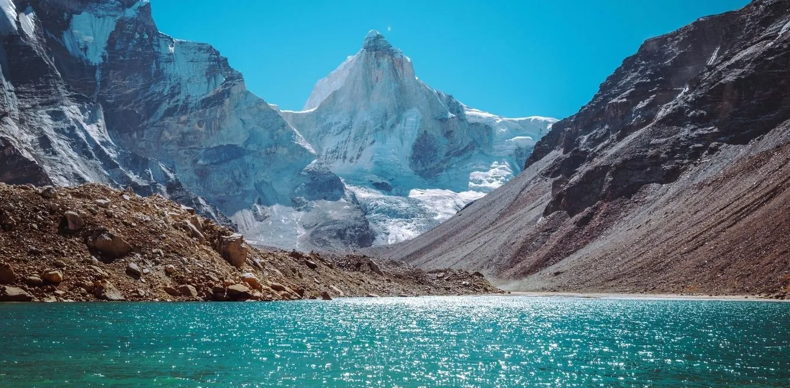
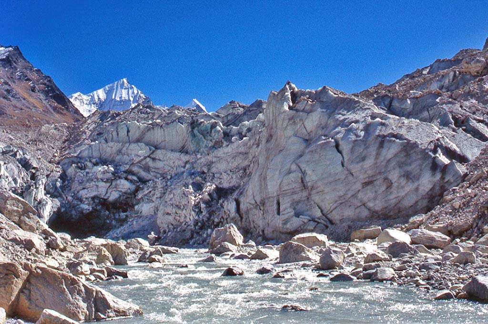

Temple
Gangotri Temple
0 km from City Center
Highest temple dedicated to Goddess Ganga. Offers a scenic view of the Himalayas and River Ganga.

Glacier
Gangotri Glacier
29 km from City Center
Source of the holy Ganga River. One of the largest glaciers in India.

Waterfall
Surya Kund
2 km from City Center
Spectacular waterfall near Gangotri Temple. Famous for creating rainbows.

Lake
Kedar Tal
10 km from City Center
A remote trek lake with stunning views of snow-clad mountains.

River Source
Gaumukh
14 km from City Center
Source of Bhagirathi River (Ganga). Popular trekking destination.